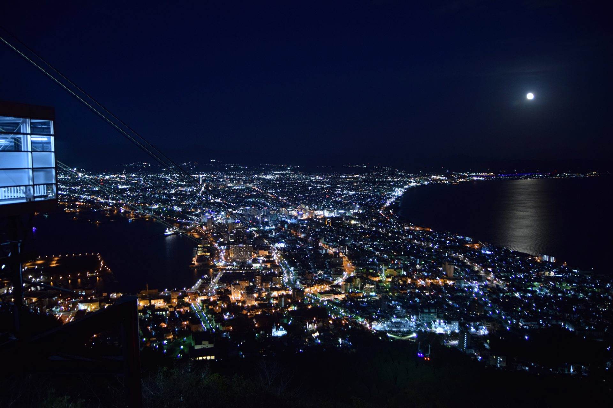
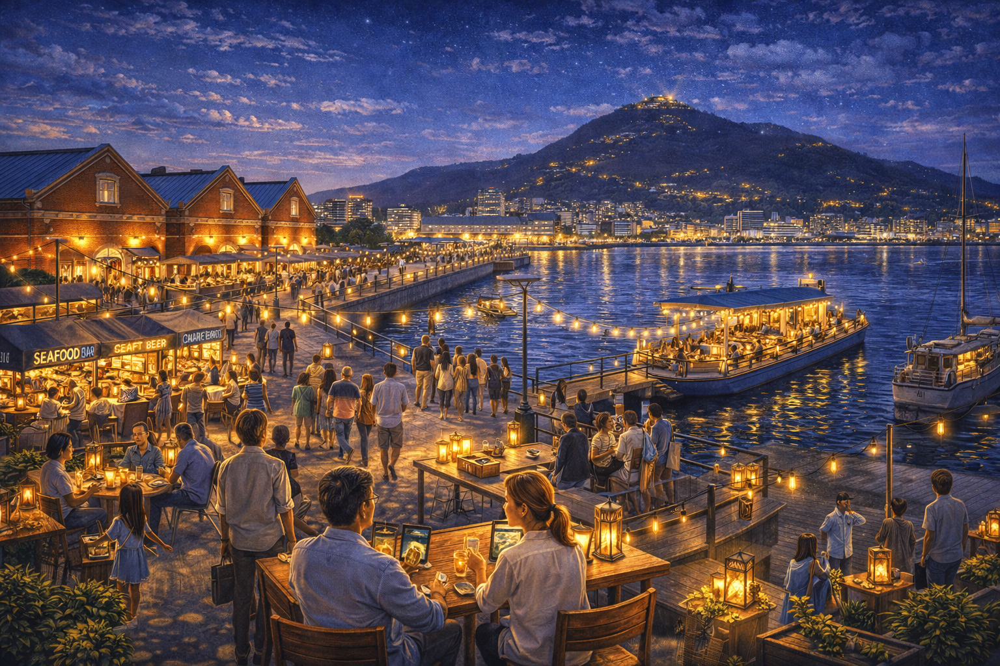
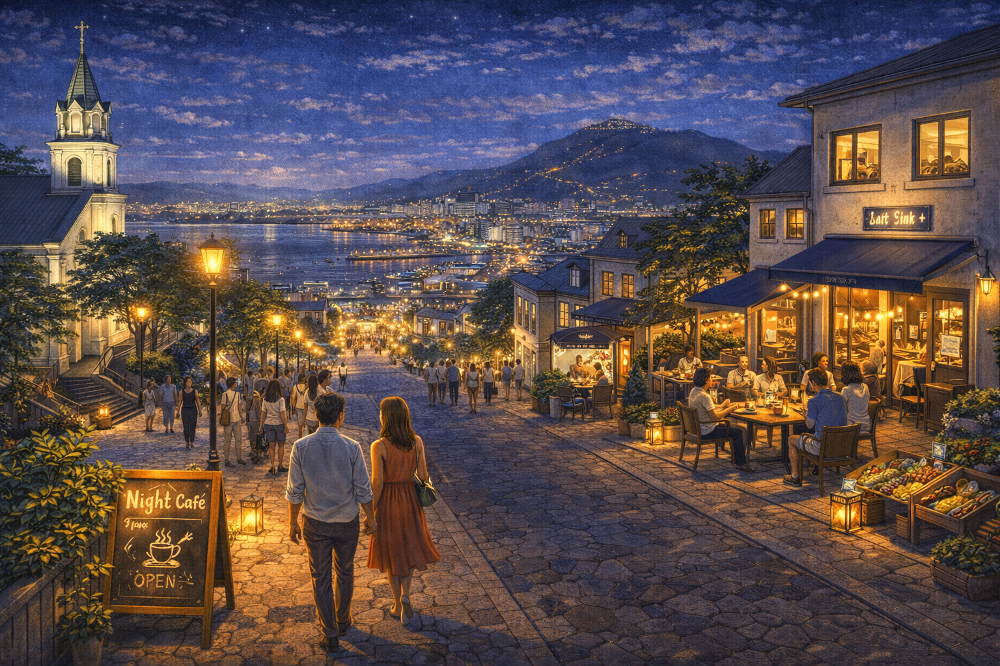
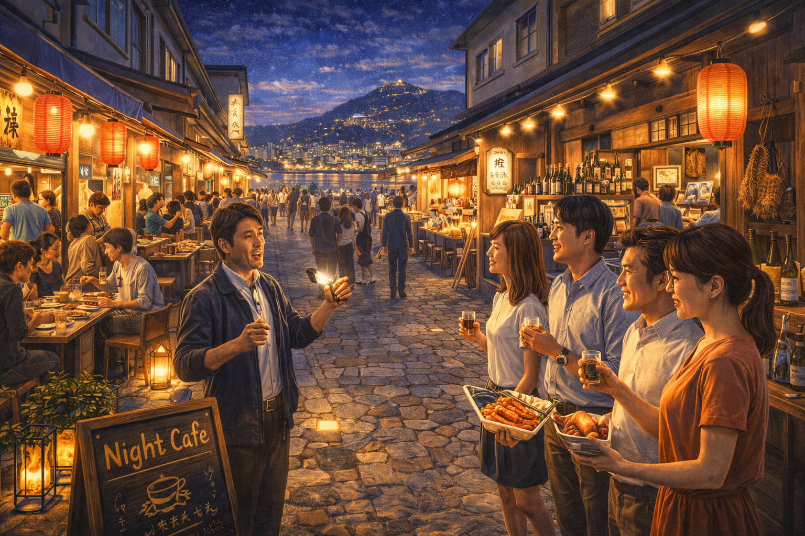
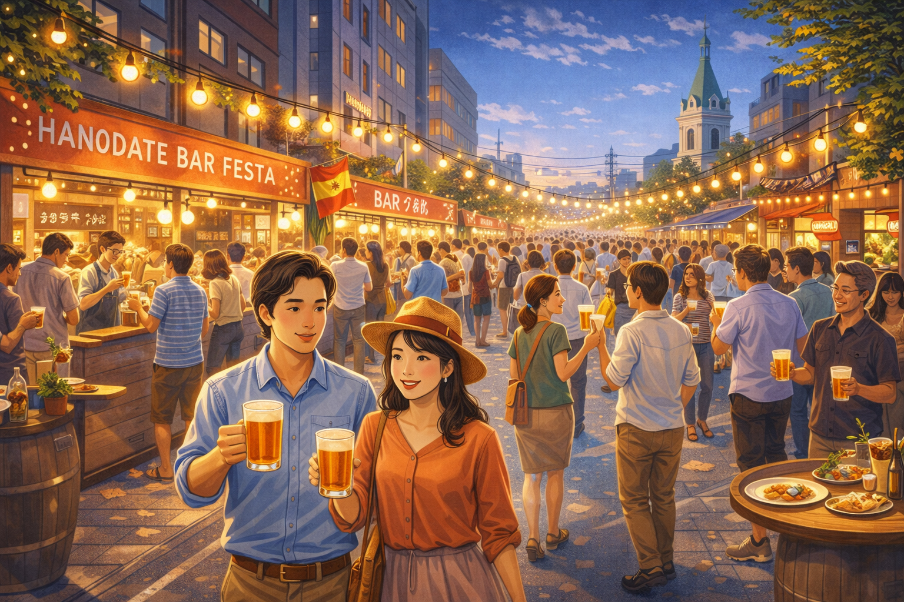

Project 02
Night Economy
20時以降の消費機会を設計し、
2泊目夜の「行く場所がない」を解消する。

Why This Matters
なぜ夜経済が必要か
観光動向調査において「夜に行ける場所が少ない」は継続的に上位に挙がる不満です。
特に2泊目の夜、函館山夜景を見た後の選択肢がない。
この構造が、滞在が短くなり、消費の機会も逃す。この二つが同時に起きています。
夜の過ごし方を変えることが、滞在都市への最も直接的な手段です。
観光客の夜間タイムライン：20時以降に消費機会の空白が発生
Measures
施策の方向
夜間経済は、単に飲食店を増やせば成り立つものではありません。
観光客が夜に移動し、滞在し、支払うためには、
都市側に4つの条件が要ります。
函館の課題は個店不足ではなく、
夜の消費が生まれる仕組み自体が、まだ設計されていないことです。
夜の"目的地"を港に再設定する
函館の夜は、夜景を見終えた後に 観光客が自然に流れ込む 明確な"第二目的地"が存在しない。
夜間消費を生むには、 単独店舗ではなく 「ここに行けば何かがある」と認識される 面的な集積が必要です。
ウォーターフロントは、 景観・回遊性・非日常感を兼ね備えた 数少ない候補地であり、 港を夜の主舞台に再設定することで、 函館山の後の人流を消費へつなぐ導線を作れます。

"夜景で終わる観光"を終わらせる
函館山夜景は強力な集客装置だが、
現状では鑑賞後の行動が分散・消失しやすい。
つまり函館は、
最も強い夜の観光資源を
二次消費につなげ切れていない。
重要なのは、 夜景そのものを強化することではなく、 夜景の後に歩きたくなる、寄りたくなる、 もう少し滞在したくなる "余韻の導線"をつくることです。
元町は歴史景観との親和性が高く、 ライトアップ、坂の演出、小型飲食、ナイトカフェなどを重ねることで、 鑑賞型観光を滞留型観光へ転換できる。

"食べる"を"体験する"に変える
函館は食の評価が高い一方で、
観光消費としては単発の夕食で終わりやすい。
この構造では、満足度は高くても消費単価は伸びにくい。
夜の食を店単位の消費ではなく、 まち全体を舞台にした体験型商品へ編集し直すことで、 同じ飲食でも支払われる金額は変わる。
ガイド、物語性、回遊、地酒、夜景、 路地や市場の空気感まで含めて商品化することで、 「食べる街」から 「夜の食文化を体験する街」へ ポジションを引き上げられます。

夜の集客を"偶発"から"計画"へ変える
夜間のにぎわいを単発イベントに依存すると、 その日だけ人が集まり、 平常時の消費構造は変わらない。
必要なのは、 季節ごとの理由を持って 夜に出歩く行動を根づかせることです。
夏は港、冬は光、春は桜、秋は食と歴史など、
季節資源と夜間演出を結びつけることで、
夜の外出そのものを函館滞在の標準行動へ変えていく。
重要なのはイベントの派手さではなく、
毎年・毎季に繰り返し選ばれる
"夜の習慣"を、街の側から設計することです。

夜経済の本質は、夜に開いている店を一つずつ増やすことではありません。
観光客が
「見終わった後、どこへ行くか」
「もう少し居ようと思えるか」
「その時間にお金を払う理由があるか」
を都市として設計することにあります。
函館の夜に足りないのは熱量ではなく、消費がつながっていく仕組みです。
Area Design
夜間消費エリアの設計
上記4つの方向性を実装するには、
夜間消費を受け止める具体的な空間の設計が要ります。
函館では、既存の観光資源を断絶したまま並べるのではなく、
夜の人流に沿って再編集することが重要になる。
以下の4エリアは、それぞれ違う役割を担う夜の消費拠点です。
港ナイトマーケット
役割は「函館の夜の中心拠点」をつくること。
単なるマーケットではなく、
夜景後の観光客、宿泊客、市民を受け止める
混在型の夜間広場として設計する。
ここは消費の場であると同時に、 函館の夜が始まる"入口"でもある。
元町バーストリート
役割は「景観消費」を「滞在消費」に変えること。
元町の価値は建物単体ではなく、
坂・教会群・石畳・光の連続性にある。
そのため、店を増やすだけでなく、 歩くこと自体が楽しい夜の通りとして 編集する必要があります。
ナイトフードツアー
役割は「点在する食」を
高単価の体験商品へ束ねること。
函館の強みは名店単体ではなく、
港町らしい食文化の厚みそのものにある。
それをガイド付きで再編集することで、 夜の消費を一過性の夕食から 回遊型の体験消費へ変える。
五稜郭夜間開放
役割は「昼の観光資産」を
夜の滞在装置へ転換すること。
五稜郭は昼間の来訪者数は多いが、
夜の消費装置としてはまだ活かされていません。
Goryokaku 2.0 と連動し、 夜間開放や演出を組み込むことで、 函館中心部にもう一つの夜間回遊核を形成できる。
4つのエリアは同じことをしているわけではありません。
港は"拠点化"、元町は"余韻の滞在化"、
フードツアーは"商品化"、五稜郭は"昼資産の夜転用"です。
このように役割を分けて設計することで、 函館の夜は単発のイベントではなく、 複数の導線が重なる都市構造として成り立ちます。